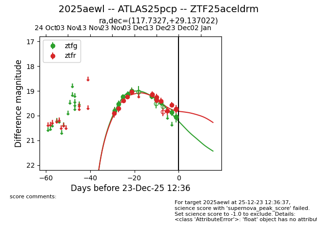
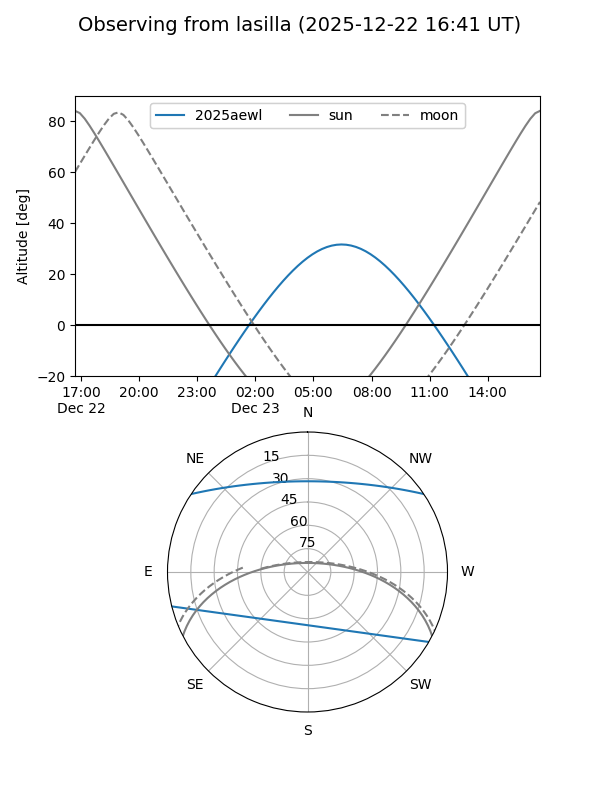
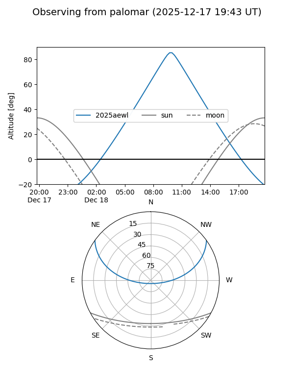
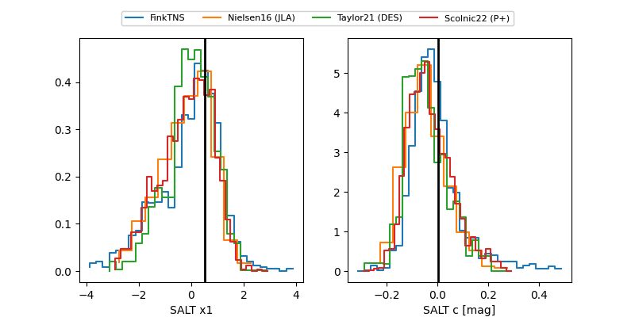

2025aewl
Target 2025aewl at 2025-12-23 12:38
Aliases and brokers:
FINK: fink-portal.org/ZTF25aceldrm
Lasair: lasair-ztf.lsst.ac.uk/objects/ZTF25aceldrm
ALeRCE: alerce.online/object/ZTF25aceldrm
TNS: wis-tns.org/object/2025aewl
YSE: ziggy.ucolick.org/yse/transient_detail/2025aewl
alt names
ZTF25aceldrm (ztf,fink_ztf)
2025aewl (tns,yse)
ATLAS25pcp (atlas)
Coordinates:
equatorial (ra, dec) = 117.7327,+29.13702
equatorial (HMS+DMS) = 07:50:55.84,+29:08:13.28
galactic (l, b) = (191.5162,+24.93270)
Flags:
Photometry:
last ztfg=20.05, ztfr=19.72
10 ztfg, 14 ztfr detections
Lightcurve

Visibility


Additional plots
